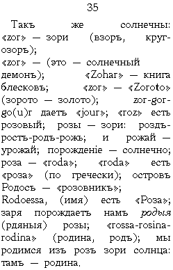
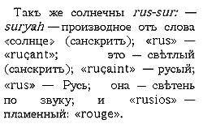
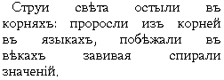

Glossolalia (Section 35)
GLOSSOLALIA

Similarly solar are : -- "zor"; sunrises in Russian are zori -- a gaze is vzor, horizon in Russian is krug-ozor "zor" -- (this is -- the sun demon); "Zohar" is -- the book of gleaming things; "zor" -- "Zoroto" (the aurora [zoroto] is--gold [zoloto]); zor-gor-go(u)r gives "jour"; "roz" is rosy; roses are --sunrises [zory]: born-growth-birth-rye in Russian are rozhd-rost-rod-rozh; and harvest is -- rozhai-urozhai; the birthing process is sunny; rose --"roda";"roda" is "rose" (in Greek); the island of Rhodes is a -- "rosebush" [rozovnik]; Rodoessa (the name) is "Rose"; the dawn [zaria] gives birth to [rodye] ruddy [rdiannye] roses for us; "rossa-rosina-rodina" (birthplace [rodina], birth [rod]); we are born from the roses of the sun's dawn: there is -- our birthplace.


Streams of light cooled off/congealed at the roots: they grew from the roots into tongues, they ran throughout the centuries whirling spirals of significations.